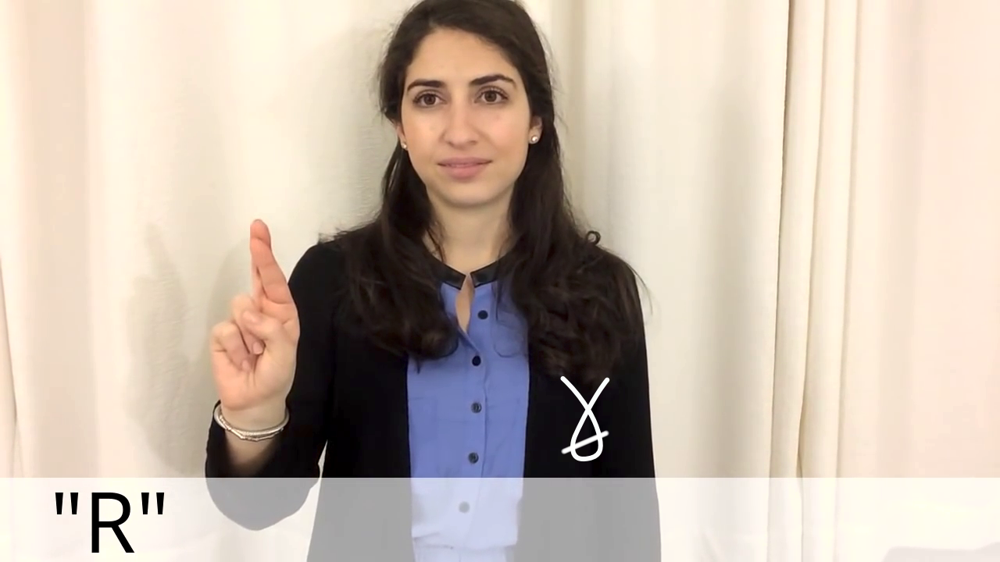

Det finns flera sätt att skriva det svenska handalfabetet med teckenskrift. Om man vill vara noggrann så kan man använda kantmarkörer för att skriva ut handens orientering i varje enskild bokstav. För enkelhets skull utelämnar man dock ofta dessa.
Notera att teckenskriftssymbolerna skrivs spegelvänt om det är en vänsterhänt person som tecknar. (Läsordningen förblir fortfarande densamma, oavsett vilken hand som används.)
Följande är den vanligaste/enklaste varianten att skriva handalfabetet
skrivs på:
 A
A B
B C
C D
D E
E F
F G
G H
H I
I J
J K
K L
L M
M N
N O
O P
P Q
Q R
R S
S T
T U
U V
V W
W X
X Y
Y Z
Z Å
Å Ä
Ä Ö
Ö
Man kan också skriva handalfabetet med mer detaljerad information om
handorientering etc (men eftersom det blir plottrigare och tar längre tid
att både läsa och skriva, är det mindre vanligt att det skrivs på detta
sätt). – Med mer detaljerad stavning kan det se ut såhär (notera det större
antalet kantmarkörer som används här, jämfört med
ovan).
 A
A B
B C
C F
F I
I L
L M
M N
N O
O P
P Q
Q S
S U
U V
V Y
Y Z
Z Ä
Ä Ö
Ö
Och nedan har vi det amerikanska handalfabetet (såsom det används med ASLWrite). Notera att eftersom handsymbolerna skrivs ur perspektivet man ser händerna i om man iakttar sitt eget tecknande, så är symbolerna spegelvända i förhållande till bilderna ur videon nedan:
Aa |
Bb |
 Cc |
 Dd |
 Ee |
 Ff |
Gg |
Hh |
 Ii |
[bild saknas] Jj |
 Kk |
Ll |
 Mm |
 Mm |
 Nn |
 Nn |
Oo |
 Pp |
 |
|  Rr |
 Ss |
 Tt |
Uu |
 Vv |
 Ww |
 Xx |
Yy |
[bild saknas] Zz |